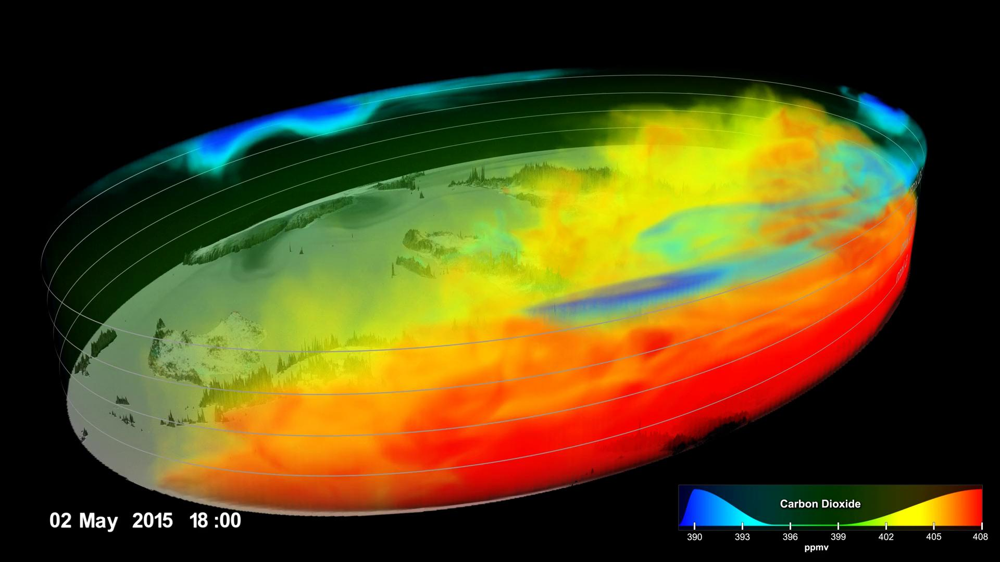
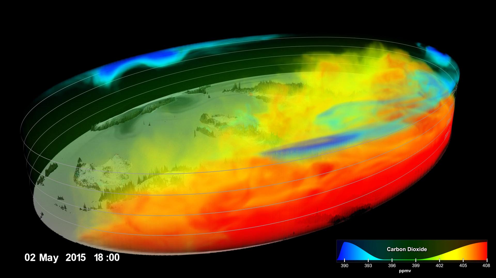

Climate Change: Rising Sea Levels
| Topics Being Discussed: |
Number of Webpage: |
| About Climate Change |
First Webpage |
| Causes of Climate Change |
First Webpage |
| Evidence & Proof of Cimate Change |
First Webpage |
| Rising Sea Levels |
Second Webpage |
| Preventions |
Third Webpage |
| Solutions |
Fourth Webpage |
 

About Climate Change, the Causes, and Evidence/Proof
Climate change can be presented in many ways, using a variety of reasons due to the topic being highly large.
In general, climate change is when sunlight reaches the Earth's surface and most of the energy gets absorbed while some amounts get reflected
back into space. In addition, most of the energy absorbed gets re-radiated into heat. Later on, the heat absorbed by
greenhouse gases will get refelted around in multiple different directions and cause the Earth to increase in temperature.
The greenhouse gases that affect and contribute to the increase in climate change are water vapor (H2O),
carbon dioxide (CO2), methane (CH4), nitrous oxide (N2O), and chlorofluorocarbons (CFCs).
Water vapor (H2O):
- This is the most highly available greenhouse gas
- This greenhouse gas increases as the Earth’s atmosphere begins to rise in temperature (heat)
- Due to that increase, it also influences the increase in clouds and different forms of precipitation
- Water vapor can also double the climates heat increase (for example, it highly affects the amount of carbon dioxide going into the atmosphere)
- Increasing water vapor trails to increase the Earth’s temperature, which in addition causes more water vapor to get absorbed into the atmosphere
Carbon dioxide (CO2):
- This gas doesn’t have the largest effect on our climate, however, it’s still a gas to consider taking note into
- Carbon dioxide is released through multiple natural processes known as cellular respiration and volcanic eruptions
- In addition, a major effect of climate change is caused by human activities such as burning fossil fuels, deforestation (clearance of trees) and using/altering land in useless ways
- Humans have increased atmospheric carbon dioxide by more than a third from the time when the Industrial Revolution began (the Industrial Revolution was the highly important “force” to climate change
Methane (CFC4):
- This is a hydrocarbon gas produced through natural processes and human activities
- Some human activities include decomposition of wastes in landfills, agriculture, rice cultivation and lastly ruminant digestion and manure management associated with domestic livestock
- This greenhouse gas is known as a highly reactive gas than carbon dioxide, however, it’s less abundant in the atmosphere (concentrations of methane are 200 times lower than the concentration of carbon dioxide but methane is actually responsible for 60% of the equivalent radiative force caused by carbon dioxide)
Nitrous oxide (N2O):
- This greenhouse gas is known as a highly powerful gas which is normally produced due to the effects of soil cultivation, commercial & organic fertilizers, combustion of fossil fuels, nitric & acid pollution, and biomass burning
Chlorofluorocarbons (CFCs):
- These synthetic compounds get applied to our earth in multiple ways
- However now, the average amount of these synthetic compounds are getting maintained in different populations
- Plus, they’re getting released into the atmosphere with the international agreement of causing destruction to the ozone layer
- These gases are simply also known as greenhouse gases
Human activities alter the natural greenhouse gas effect. Over the past century, the burning of fossil fuels consisting of oil,
coal, and natural gases have gradually increased atmospheric carbon dioxide (CO2). This is normally the product of burning these
types of fossil fuels due to the result after burning them and combining them with oxygen to generally produce carbon dioxide in the atmosphere.
In general, the effects of clearing land for agriculture, industry, and numerous other human activities have increased the concentration
of greenhouse gases as well.
Consequences of altering natural greenhouse gases:
- Earth’s temperature will generally increase (warm-up). However, some regions temperatures might remain the same
- Warmer temperatures will lead to more precipitation and evaporation. However, individual regions will be slightly different. They would either begin to get wetter or dryer.
- The greenhouse gas effects will eventually warm up oceans, melt glaciers & other ice, and increase the sea levels. Plus, oceans will also start to expand if the heating further continues which will contribute to the sea levels continuing to rise.
- Plants may begin to grow strongly and use larger amounts of water due to the increase in carbon dioxide. Plus, while some plant growth benefits from this increase, in some regions, the best plants lose the ability to grow and undergo photosynthesis to produce their own food.
Climate change consists of multiple pieces of evidence to prove the fact that it’s a rising issue. Some details of evidence are:
Global temperature rise:
- Our planet's average surface temperature has risen by 0.9 degrees Celsius since the late 19th century due to large amounts of carbon dioxide and human-made emissions entering our atmosphere
Warming oceans:
- Most of our oceans have absorbed fairly large amounts of this increased heat entering our earth
- The top 700 meters (2300 feet) of our oceans have captured this heat and caused itself to heat up by more than 0.4 degrees Fahrenheit (-17.56 degrees Celsius)
Shrinking ice sheets:
- The Greenlands and Antarctic ice sheets have largely decreased in mass
- Greenlands have lost over 286 billion tons of ice/year between the years 1993-2016
- Antarctica has lost 127 billion tons of ice/year during the same decade as Greenlands
- The rate of Antarctica’s ice loss has tripled recently in the last decade
Glacial retreat:
- Glaciers are retreating around numerous parts of the world
- Some places where this is taking place is in the Alps, Himalayas, Rockies, Alaska, and Africa
Decreased snow cover:
- Amounts of spring snow found in the northern hemisphere have gradually decreased in the past five decades
- The snow in the northern hemisphere is now melting at a faster rate than before
Sea levels rising:
- Our global sea levels have risen a height of 8 inches in the last century
- The last two decades have increased the rate by double of the last century
- Every year the rate slightly increases
Declining Arctic sea ice:
- The extent of Arctic sea levels have declined rapidly over the last several decades
Ocean acidification:
- Since the beginning of the Industrial Revolution, surface ocean waters have increased by 30% in acidity levels
- This increase results in humans emitting larger amounts of carbon dioxide into the atmosphere which results in more being absorbed by the oceans
- The amounts of carbon dioxide being absorbed by the surface of oceans have increased by 2 billion tons/year
The NASA Climate Change page on links includes more information about climate change.
The NASA Climate Change page on links includes more information about the causes.
The NASA Climate Change page on links includes more information about the evidence/proof.
Return to the top of the page.